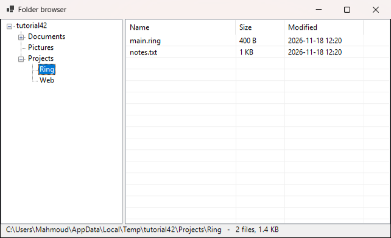

A folder browser
A tree of folders on the left, the files of the chosen folder on the right, and the totals at the bottom. A small Explorer, with TreeView and ListView.
What you will learn#
TreeViewand its nodes, and theTagproperty,ListViewin details mode with columns,- building a tree from folders recursively,
- reacting to the user's choice,
- formatting file sizes.
The controls#
| Control | Shows | You use |
|---|---|---|
TreeView | a hierarchy | Nodes, Node.Nodes, SelectedNode, event AfterSelect |
ListView | a list with columns | View = "Details", Columns, Items, ListViewItem.SubItems |
The program#
# a folder browser - a TreeView of folders, a ListView of files, and the details of a file
load "dotnet.ring"
using {
"System"
"System.IO"
"System.Drawing"
"System.Windows.Forms"
}
oForm = ""
oTree = ""
oList = ""
oStatus = ""
cRoot = ""
func main
# The folder to browse: this program makes a small demo folder (give another folder as the first argument to browse it)
cRoot = makeDemoFolder()
if len(sysargv) >= 3 and sysargv[3] != "--selftest"
cRoot = sysargv[3]
ok
oForm = uiForm("Folder browser",640,360)
# The pieces: a SplitContainer with the folders on the left and the files on the right, a status line at the bottom
oSplit = new SplitContainer() {
Dock = "Fill"
}
oForm.Controls.Add(oSplit)
oSplit.SplitterDistance = 200
oTree = new TreeView() {
Dock = "Fill"
}
oSplit.Panel1.Controls.Add(oTree)
oList = new ListView() {
Dock = "Fill"
View = "Details" # columns, like Explorer
FullRowSelect = True
GridLines = True
}
oList.Columns.Add([ :text = "Name", :width = 180 ])
oList.Columns.Add([ :text = "Size", :width = 80 ])
oList.Columns.Add([ :text = "Modified", :width = 130 ])
oSplit.Panel2.Controls.Add(oList)
oStatus = uiLabel(oForm,"",0,0,640,22)
oStatus.Dock = "Bottom"
# fill the tree from the folder, and react when the user picks a node
oRootNode = addFolderNode(oTree.Nodes,cRoot)
oRootNode.Expand()
oTree.setAfterSelectEvent("folderChosen()")
oTree.SelectedNode = oRootNode
uiRun(oForm)
# A node for a folder, with a node for each subfolder below it. The Tag of a node remembers the full path.
func addFolderNode oNodes, cFolder
oNode = oNodes.Add(new Path().GetFileName(cFolder))
oNode.Tag = cFolder
aSubs = sort(new Directory().GetDirectories(cFolder).toList())
for cSub in aSubs
addFolderNode(oNode.Nodes,cSub)
next
return oNode
# The user picked a folder: list its files
func folderChosen
cFolder = oTree.SelectedNode.Tag
oList.Items.Clear()
nFiles = 0
nBytes = 0
aFiles = sort(new Directory().GetFiles(cFolder).toList())
for cFile in aFiles
oInfo = new FileInfo(cFile)
oItem = new ListViewItem().@New([ :text = oInfo.Name ])
oItem.SubItems.Add(sizeText(oInfo.Length))
oItem.SubItems.Add(oInfo.LastWriteTime.Format("yyyy-MM-dd HH:mm"))
oList.Items.Add(oItem)
nFiles++
nBytes += oInfo.Length
next
oStatus.Text = " " + cFolder + " - " + nFiles + " files, " + sizeText(nBytes)
# a size in bytes as text: 1536 -> 1.5 KB
func sizeText nBytes
if nBytes < 1024
return "" + nBytes + " B"
but nBytes < 1024 * 1024
return uiNumber(floor(nBytes / 102.4) / 10) + " KB" # uiNumber: 1.5, not Ring's fixed 1.50
ok
return uiNumber(floor(nBytes / 104857.6) / 10) + " MB"
# a demo folder with folders and files
func makeDemoFolder
cBase = new Path().Combine([new Path().GetTempPath(),"ringdotnet_browser"])
if new Directory().Exists(cBase)
new Directory().Delete([ :path = cBase, :recursive = True ])
ok
for cName in ["Projects/Ring","Projects/Web","Pictures","Documents/2024"]
new Directory().CreateDirectory(new Path().Combine([cBase,cName]))
next
new File().WriteAllText([ :path = new Path().Combine([cBase,"readme.txt"]), :contents = "A demo folder" ])
new File().WriteAllText([ :path = new Path().Combine([cBase,"Projects/Ring/main.ring"]), :contents = copies("? 'hello'" + nl,40) ])
new File().WriteAllText([ :path = new Path().Combine([cBase,"Projects/Ring/notes.txt"]), :contents = copies("some notes ",100) ])
new File().WriteAllText([ :path = new Path().Combine([cBase,"Projects/Web/index.html"]), :contents = "<html></html>" ])
new File().WriteAllText([ :path = new Path().Combine([cBase,"Documents/2024/report.txt"]), :contents = copies("report line" + nl,500) ])
return cBase
func copies cText, nTimes
cResult = ""
for nIndex = 1 to nTimes
cResult += cText
next
return cResult
How it works#
A demo folder#
makeDemoFolder creates folders and files in the temp folder, so the tutorial can show a result and be tested anywhere. Give the program a real folder as its first argument to browse it: ring ch10_browser.ring "C:\Users\you\Documents".
Building the tree#
addFolderNode(nodes, folder) makes one node for the folder and then calls itself for every subfolder: that is recursion, the natural way to walk a tree. Folders are sorted so the order is stable. The important line:
oNode.Tag = cFolderTag is a free property that can hold anything: here the full path of the folder. The node's Text is only the name; when the user picks a node, the program reads its Tag to know which folder it is.
For a very big tree, build only the first level and add the subfolders when a node is expanded (event BeforeExpand). Walking a whole disk at start would take too long.
Reacting to the choice#
setAfterSelectEvent("folderChosen()") runs when a node is selected. The function reads oTree.SelectedNode.Tag, clears the list, and adds a ListViewItem for every file: new ListViewItem().@New([ :text = name ]) makes the row with its first column, and SubItems.Add(text) fills the other columns (size, modified date).
The ListView#
View = "Details" shows columns like Explorer; Columns.Add([ :text = "Name", :width = 180 ]) adds a column with a title and a width in pixels; FullRowSelect highlights a whole row; GridLines draws lines. A ListView can also show icons (LargeIcon, SmallIcon, List).
File sizes#
sizeText turns 1536 into 1.5 KB. uiNumber(...) formats a number without Ring's fixed two decimals (otherwise 1.5 would be written 1.50).
Testing#
The test checks the tree (one root, three subfolders), selects a node by code (oTree.SelectedNode = ..., which raises the same event as a click), and checks the list and the status line. It also tests sizeText as a plain function.
The checks of this program are in a separate file, selftest/ch10_browser.ring:
# the checks of ch10_browser.ring: run with ring ch10_browser.ring --selftest (the program loads this file and runs selfTest() once its window is shown)
func selfTest
dnAssert("the root node",oTree.Nodes.Count,1)
dnAssert("the root has three subfolders",oTree.Nodes.Item(0).Nodes.Count,3)
dnAssert("the root folder has one file",oList.Items.Count,1)
# pick the folder Projects > Ring
oProjects = oTree.Nodes.Item(0).Nodes.Item(2) # sorted: Documents, Pictures, Projects
dnAssert("the node is Projects",oProjects.Text,"Projects")
oTree.SelectedNode = oProjects.Nodes.Item(0)
dnAssert("two files in Ring",oList.Items.Count,2)
dnAssert("the first file",oList.Items.Item(0).Text,"main.ring")
dnAssert("the status shows the folder and the totals",substr(oStatus.Text,"2 files") > 0,True)
dnAssert("a size text",sizeText(1536),"1.5 KB")
dnAssert("a small size",sizeText(300),"300 B")
new Directory().Delete([ :path = cRoot, :recursive = True ])What you learned#
- recursion builds a tree,
Tagcarries data on a node,ListViewdetails mode,- selection events fill the other control.
Exercises#
- Show an icon for folders and files (an
ImageList). - Sort the list when the user clicks a column header (
ColumnClick). - Open a file with a double-click (
Process.StartwithUseShellExecute = True). - Add a Refresh button that reloads the tree.
The full-size version is the FileExplorer application.
Where to go next#
This was the last tutorial of the chapter Windows Forms. The next chapter is WPF: it starts with WPF. The Tutorials page lists all the chapters, and you can start any of them.